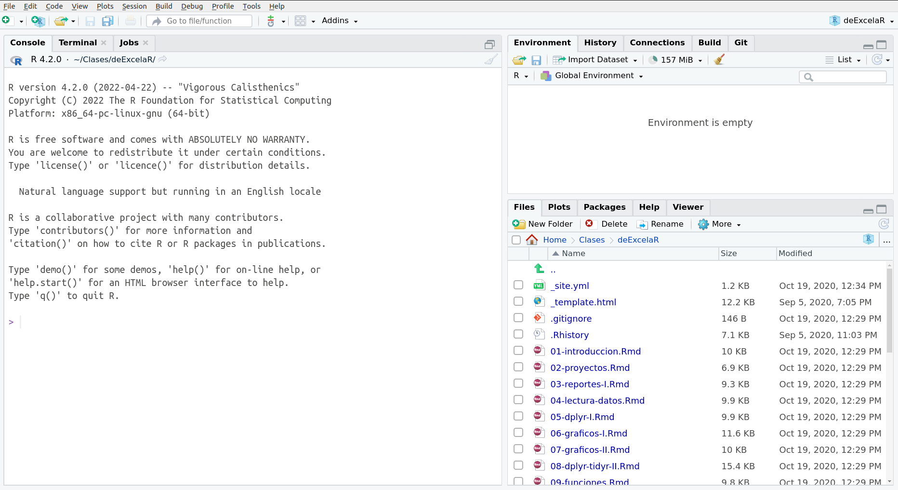
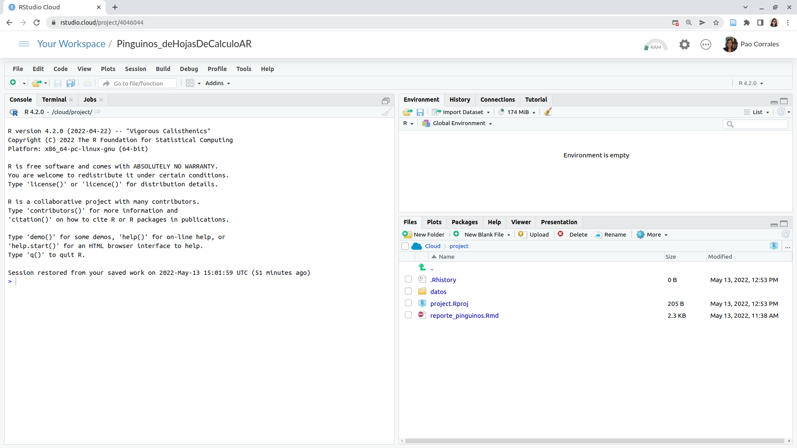
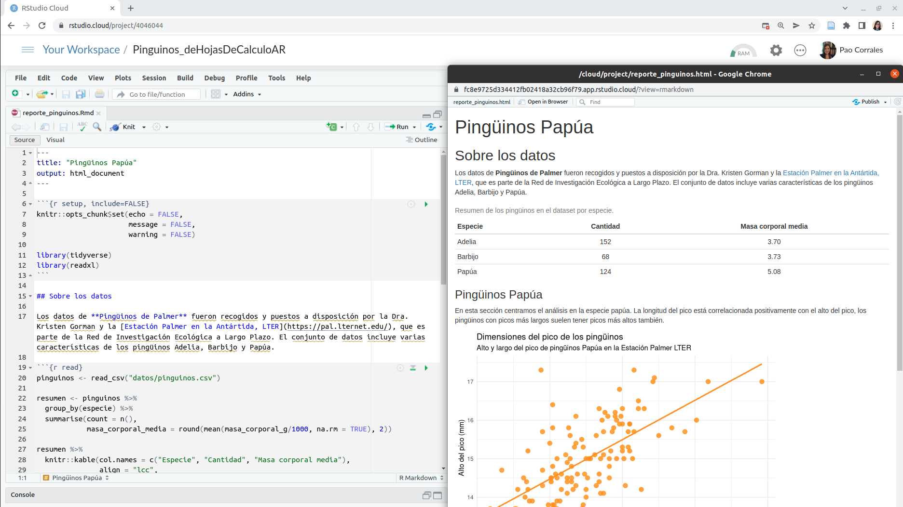

¿Por qué R?
Las hojas de cálculo son un software admirable. Son geniales para
cargar datos, para ver los datos crudos y para hacer gráficos rápidos.
Si venís usándolo hace tiempo, seguro que aprendiste un montón de trucos
para sacarle el jugo al máximo, habrás aprendido a usar fórmulas, tablas
dinámicas, e incluso macros. Pero seguro que también sufriste sus
limitaciones.
En una hoja de cálculo no hay un límite claro entre datos y análisis.
Sobrescribir datos es un peligro muy real y análisis complicados son
imposibles de entender, especialmente si abrís una hoja de cálculo
armada por otra persona (que quizás es tu vos del pasado). Además,
repetir el análisis en datos distintos o cambiando algún parámetro se
puede volver muy engorroso.
Si lo que necesitás son reportes frecuentes y automáticos, y análisis
de datos con muchas partes móviles, estaría bueno poder escribir una
receta paso a paso y que la computadora corra todo automáticamente cada
vez que se lo pedís. Para poder hacer eso, ese paso a paso tiene que
estar escrito en un lenguaje que la computadora pueda entender, ese
lenguaje es R.
¿Cómo vamos a trabajar?
Vamos a usar R como lenguaje de programación y RStudio como una IDE
(Integrated Development Environment), un Entorno Integrado de
Desarrollo. Si no los tenés instalado en tu computadora, no te
preocupes, tenemos este proyecto en Posit Cloud
para que puedas trabajar.
Para iniciar RStudio, hacé doble click en el ícono de RStudio.
Iniciar RStudio también inicia R (en realidad, es probable que nunca
abras R por sí mismo).


Observa los paneles por defecto:
- Consola (toda la izquierda)
- Environment/History (pestaña en la parte superior derech)
- Files/Plots/Packages/Help (con pestañas en la parte inferior
derecha)
No es necesario que sepamos utilizar todo esto de inmediato. Nos
familiarizaremos con más opciones y capacidades a lo largo del
taller.
Podemos escribir código, es decir, instrucciones para ser ejecutadas
por R en la Consola. Por ejemplo, podemos calcular el resultado dos más
dos escribiendo
## [1] 4
en la Consola y pulsando enter.
El resultado aparece justo debajo. También podemos guardar ese
resultado en un objeto, en este caso llamado x.
Esa flechita es el operador de asignación y funciona como un
=. Ahora el resultado se guarda en el Entorno (Environment)
como una variable con nombre x y no se imprime en la
consola.
Esto es útil cuando estamos probando el código para ver si funciona
pero lo perderemos todo cuando cerremos RStudio. Lo que tenemos que
hacer es guardar el código que genera su análisis. Para ello utilizamos
R Scripts y archivos RMarkdown.
Vamos a tener nuestra primera experiencia con R a través de
RMarkdown, así que vamos a ver qué es un documento RMarkdown. Te
preparamos este informe de ejemplo,
por favor abrilo en RStudio o en Posit Cloud. El archivo aparecerá en un
nuevo panel arriba en el lado izquierdo de la pantalla, y el panel de la
consola se moverá hacia abajo.
RMarkdown
Un archivo RMarkdown es un archivo de texto plano, con algunas reglas
y una sintaxis especial que nos permite escribir código y texto juntos.
Cuando se “teje” (knit), el código se evaluará y ejecutará y el texto se
formateará de manera que se cree un informe o documento reproducible que
sea agradable de leer y que contenga todo tu trabajo.
Esto es realmente crítico para la reproducibilidad. También nos
ahorra tiempo y puede ayudar en las tareas de automatización. Este
documento recreará tus figuras por ti en el mismo documento donde estás
escribiendo el texto que las explica. Esto le ahorrará el esfuerzo de
hacer un análisis, guardar un gráfico en un archivo, copiar y pegar ese
gráfico en Word o Power Point o Google Slides, y tener que hacerlo todo
de nuevo después de descubrir un error tipográfico.
Ahora veamos cómo es nuestro Informe de Pingüinos.
- La parte superior tiene el Título y el tipo de salida (que en este
caso es un documento HTML).
- Debajo hay secciones alternas blancas y grises.
Estas son las dos secciones principales que componen un archivo
RMarkdown: * Las secciones grises son el código R * Las secciones
blancas son el texto de Markdown
- Hay texto negro, azul y verde.
Sigamos adelante y “tejamos (knit)” el documento haciendo clic en el
ovillo de hilo azul ( ) en la parte
superior del archivo RMarkdown.
) en la parte
superior del archivo RMarkdown.
¡Acabamos de crear un archivo html! Se trata de una única página web
que estamos viendo localmente en nuestros propios ordenadores. Al
generar este documento RMarkdown, R ha formateado el texto markdown y ha
ejecutado el código R.

Texto markdown
Podes ver una guia sobre rmakdown en
esta guía rápida, pero aquí hay una sintaxis mínima para
empezar:
- encabezados empiezan con
# o ##y asi
siguiendo (es importante poner un espacio después del último
#).
- las palabras en negrita están rodeadas de
**
- y las cursiva, con
_
Código de R
El código R se escribe dentro de “chunks (trozos)” de código. Los
trozos de código comienzan con ```{r label} (donde “label”
es un nombre opcional y único) y terminan con ```. En
RStudio, podes crear un nuevo chunk con el atajo de teclado
Ctrl + Alt + I.
Este informe muestra información sobre los pingüinos Papúa, pero
podríamos cambiar algunas líneas de código para crear el mismo análisis
para las otras dos especies, Adelia y Barbijo.
Ahora es tu turno. Sigue buscando en el código, si encuentras alguna
mención a “Papúa”, cámbiala por cualquiera de las otras especies.
Esta tarea es un poco engorrosa si hay que cambiar muchas cosas cada
vez que queremos volver a ejecutar el análisis para diferentes especies.
Pero no te preocupes, aprenderemos a hacer todo más automático al final
del taller.
LS0tDQp0aXRsZTogIkludHJvZHVjY2nDs24geSBSZXBvcnRlcyINCm91dHB1dDogDQogIGh0bWxfZG9jdW1lbnQ6DQogICAgY29kZV9kb3dubG9hZDogdHJ1ZQ0KICAgIHRvYzogdHJ1ZQ0KICAgIHRvY19mbG9hdDogZmFsc2UNCiAgICBoaWdobGlnaHQ6IHRhbmdvDQotLS0NCg0KIyMgwr9Qb3IgcXXDqSBSPw0KDQpMYXMgaG9qYXMgZGUgY8OhbGN1bG8gc29uIHVuIHNvZnR3YXJlIGFkbWlyYWJsZS4gU29uIGdlbmlhbGVzIHBhcmEgY2FyZ2FyIGRhdG9zLCBwYXJhIHZlciBsb3MgZGF0b3MgY3J1ZG9zIHkgcGFyYSBoYWNlciBncsOhZmljb3MgcsOhcGlkb3MuIFNpIHZlbsOtcyB1c8OhbmRvbG8gaGFjZSB0aWVtcG8sIHNlZ3VybyBxdWUgYXByZW5kaXN0ZSB1biBtb250w7NuIGRlIHRydWNvcyBwYXJhIHNhY2FybGUgZWwganVnbyBhbCBtw6F4aW1vLCBoYWJyw6FzIGFwcmVuZGlkbyBhIHVzYXIgZsOzcm11bGFzLCB0YWJsYXMgZGluw6FtaWNhcywgZSBpbmNsdXNvIG1hY3Jvcy4gUGVybyBzZWd1cm8gcXVlIHRhbWJpw6luIHN1ZnJpc3RlIHN1cyBsaW1pdGFjaW9uZXMuDQoNCkVuIHVuYSBob2phIGRlIGPDoWxjdWxvIG5vIGhheSB1biBsw61taXRlIGNsYXJvIGVudHJlIGRhdG9zIHkgYW7DoWxpc2lzLiBTb2JyZXNjcmliaXIgZGF0b3MgZXMgdW4gcGVsaWdybyBtdXkgcmVhbCB5IGFuw6FsaXNpcyBjb21wbGljYWRvcyBzb24gaW1wb3NpYmxlcyBkZSBlbnRlbmRlciwgZXNwZWNpYWxtZW50ZSBzaSBhYnLDrXMgdW5hIGhvamEgZGUgY8OhbGN1bG8gYXJtYWRhIHBvciBvdHJhIHBlcnNvbmEgKHF1ZSBxdWl6w6FzIGVzIHR1IHZvcyBkZWwgcGFzYWRvKS4gQWRlbcOhcywgcmVwZXRpciBlbCBhbsOhbGlzaXMgZW4gZGF0b3MgZGlzdGludG9zIG8gY2FtYmlhbmRvIGFsZ8O6biBwYXLDoW1ldHJvIHNlIHB1ZWRlIHZvbHZlciBtdXkgZW5nb3Jyb3NvLg0KDQpTaSBsbyBxdWUgbmVjZXNpdMOhcyBzb24gcmVwb3J0ZXMgZnJlY3VlbnRlcyB5IGF1dG9tw6F0aWNvcywgeSBhbsOhbGlzaXMgZGUgZGF0b3MgY29uIG11Y2hhcyBwYXJ0ZXMgbcOzdmlsZXMsIGVzdGFyw61hIGJ1ZW5vIHBvZGVyIGVzY3JpYmlyIHVuYSByZWNldGEgcGFzbyBhIHBhc28geSBxdWUgbGEgY29tcHV0YWRvcmEgY29ycmEgdG9kbyBhdXRvbcOhdGljYW1lbnRlIGNhZGEgdmV6IHF1ZSBzZSBsbyBwZWTDrXMuIFBhcmEgcG9kZXIgaGFjZXIgZXNvLCBlc2UgcGFzbyBhIHBhc28gdGllbmUgcXVlIGVzdGFyIGVzY3JpdG8gZW4gdW4gbGVuZ3VhamUgcXVlIGxhIGNvbXB1dGFkb3JhIHB1ZWRhIGVudGVuZGVyLCBlc2UgbGVuZ3VhamUgZXMgUi4NCg0KIyMgwr9Dw7NtbyB2YW1vcyBhIHRyYWJhamFyPw0KDQpWYW1vcyBhIHVzYXIgUiBjb21vIGxlbmd1YWplIGRlIHByb2dyYW1hY2nDs24geSBSU3R1ZGlvIGNvbW8gdW5hIElERSAoSW50ZWdyYXRlZCBEZXZlbG9wbWVudCBFbnZpcm9ubWVudCksIHVuIEVudG9ybm8gSW50ZWdyYWRvIGRlIERlc2Fycm9sbG8uIFNpIG5vIGxvcyB0ZW7DqXMgaW5zdGFsYWRvIGVuIHR1IGNvbXB1dGFkb3JhLCBubyB0ZSBwcmVvY3VwZXMsIHRlbmVtb3MgZXN0ZSAgW3Byb3llY3RvIGVuIFBvc2l0IENsb3VkXShodHRwczovL3Bvc2l0LmNsb3VkL2NvbnRlbnQvNDA0NjA0NCkgcGFyYSBxdWUgcHVlZGFzIHRyYWJhamFyLg0KDQpQYXJhIGluaWNpYXIgUlN0dWRpbywgaGFjw6kgZG9ibGUgY2xpY2sgZW4gZWwgw61jb25vIGRlIFJTdHVkaW8uIEluaWNpYXIgIFJTdHVkaW8gdGFtYmnDqW4gaW5pY2lhIFIgKGVuIHJlYWxpZGFkLCBlcyBwcm9iYWJsZSBxdWUgbnVuY2EgYWJyYXMgUiBwb3Igc8OtIG1pc21vKS4NCg0KDQo8aW1nIHNyYz0iaW1nL3JzdHVkaW8tcHJpbmNpcGFsLnBuZyIgYWx0PSJQYW50YWxsYSBwcmluY2lwYWwgZGUgUlN0dWRpby4gUGFuZWxlcyBkZSBjb25zb2xhLCBlbnRvcm5vIHkgYXJjaGl2b3MiIC8+DQoNCjxpbWcgc3JjPSJpbWcvcnN0dWRpby1jbG91ZC1wcmluY2lwYWwucG5nIiBhbHQ9IlBhbnRhbGxhIHByaW5jaXBhbCBkZSBQb3NpdCBDbG91ZC4gUGFuZWxlcyBkZSBjb25zb2xhLCBlbnRvcm5vIHkgYXJjaGl2b3MiIC8+DQoNCk9ic2VydmEgbG9zIHBhbmVsZXMgcG9yIGRlZmVjdG86DQoNCiAgKiBDb25zb2xhICh0b2RhIGxhIGl6cXVpZXJkYSkNCiAgKiBFbnZpcm9ubWVudC9IaXN0b3J5IChwZXN0YcOxYSBlbiBsYSBwYXJ0ZSBzdXBlcmlvciBkZXJlY2gpDQogICogRmlsZXMvUGxvdHMvUGFja2FnZXMvSGVscCAoY29uIHBlc3Rhw7FhcyBlbiBsYSBwYXJ0ZSBpbmZlcmlvciBkZXJlY2hhKQ0KDQpObyBlcyBuZWNlc2FyaW8gcXVlIHNlcGFtb3MgdXRpbGl6YXIgdG9kbyBlc3RvIGRlIGlubWVkaWF0by4gTm9zIGZhbWlsaWFyaXphcmVtb3MgY29uIG3DoXMgb3BjaW9uZXMgeSBjYXBhY2lkYWRlcyBhIGxvIGxhcmdvIGRlbCB0YWxsZXIuDQoNClBvZGVtb3MgZXNjcmliaXIgY8OzZGlnbywgZXMgZGVjaXIsIGluc3RydWNjaW9uZXMgcGFyYSBzZXIgZWplY3V0YWRhcyBwb3IgUiBlbiBsYSBDb25zb2xhLiBQb3IgZWplbXBsbywgcG9kZW1vcyBjYWxjdWxhciBlbCByZXN1bHRhZG8gZG9zIG3DoXMgZG9zIGVzY3JpYmllbmRvDQoNCmBgYHtyfQ0KMiArIDINCmBgYA0KDQplbiBsYSBDb25zb2xhIHkgcHVsc2FuZG8gZW50ZXIuIA0KDQpFbCByZXN1bHRhZG8gYXBhcmVjZSBqdXN0byBkZWJham8uIFRhbWJpw6luIHBvZGVtb3MgZ3VhcmRhciBlc2UgcmVzdWx0YWRvIGVuIHVuIG9iamV0bywgZW4gZXN0ZSBjYXNvIGxsYW1hZG8gYHhgLg0KDQpgYGB7cn0NCnggPC0gMiArIDIgDQpgYGANCg0KRXNhIGZsZWNoaXRhIGVzIGVsICpvcGVyYWRvciBkZSBhc2lnbmFjacOzbiogeSBmdW5jaW9uYSBjb21vIHVuIGA9YC4gQWhvcmEgZWwgcmVzdWx0YWRvIHNlIGd1YXJkYSBlbiBlbCBFbnRvcm5vIChFbnZpcm9ubWVudCkgY29tbyB1bmEgdmFyaWFibGUgY29uIG5vbWJyZSBgeGAgeSBubyBzZSBpbXByaW1lIGVuIGxhIGNvbnNvbGEuIA0KDQpFc3RvIGVzIMO6dGlsIGN1YW5kbyBlc3RhbW9zIHByb2JhbmRvIGVsIGPDs2RpZ28gcGFyYSB2ZXIgc2kgZnVuY2lvbmEgcGVybyBsbyBwZXJkZXJlbW9zIHRvZG8gY3VhbmRvIGNlcnJlbW9zIFJTdHVkaW8uIExvIHF1ZSB0ZW5lbW9zIHF1ZSBoYWNlciBlcyBndWFyZGFyIGVsIGPDs2RpZ28gcXVlIGdlbmVyYSBzdSBhbsOhbGlzaXMuIFBhcmEgZWxsbyB1dGlsaXphbW9zIFIgU2NyaXB0cyB5IGFyY2hpdm9zIFJNYXJrZG93bi4NCg0KVmFtb3MgYSB0ZW5lciBudWVzdHJhIHByaW1lcmEgZXhwZXJpZW5jaWEgY29uIFIgYSB0cmF2w6lzIGRlIFJNYXJrZG93biwgYXPDrSBxdWUgdmFtb3MgYSB2ZXIgcXXDqSBlcyB1biBkb2N1bWVudG8gUk1hcmtkb3duLiBUZSBwcmVwYXJhbW9zIFtlc3RlIGluZm9ybWUgZGUgZWplbXBsb10ocmVwb3J0ZV9waW5ndWlub3MuUm1kKSwgcG9yIGZhdm9yIGFicmlsbyBlbiBSU3R1ZGlvIG8gZW4gUG9zaXQgQ2xvdWQuIEVsIGFyY2hpdm8gYXBhcmVjZXLDoSBlbiB1biBudWV2byBwYW5lbCBhcnJpYmEgZW4gZWwgbGFkbyBpenF1aWVyZG8gZGUgbGEgcGFudGFsbGEsIHkgZWwgcGFuZWwgZGUgbGEgY29uc29sYSBzZSBtb3ZlcsOhIGhhY2lhIGFiYWpvLg0KDQoNCiMjIFJNYXJrZG93bg0KDQpVbiBhcmNoaXZvIFJNYXJrZG93biBlcyB1biBhcmNoaXZvIGRlIHRleHRvIHBsYW5vLCBjb24gYWxndW5hcyByZWdsYXMgeSB1bmEgc2ludGF4aXMgZXNwZWNpYWwgcXVlIG5vcyBwZXJtaXRlIGVzY3JpYmlyIGPDs2RpZ28geSB0ZXh0byBqdW50b3MuIEN1YW5kbyBzZSAidGVqZSIgKGtuaXQpLCBlbCBjw7NkaWdvIHNlIGV2YWx1YXLDoSB5IGVqZWN1dGFyw6EgeSBlbCB0ZXh0byBzZSBmb3JtYXRlYXLDoSBkZSBtYW5lcmEgcXVlIHNlIGNyZWUgdW4gaW5mb3JtZSBvIGRvY3VtZW50byByZXByb2R1Y2libGUgcXVlIHNlYSBhZ3JhZGFibGUgZGUgbGVlciB5IHF1ZSBjb250ZW5nYSB0b2RvIHR1IHRyYWJham8uDQoNCkVzdG8gZXMgcmVhbG1lbnRlIGNyw610aWNvIHBhcmEgbGEgcmVwcm9kdWNpYmlsaWRhZC4gVGFtYmnDqW4gbm9zIGFob3JyYSB0aWVtcG8geSBwdWVkZSBheXVkYXIgZW4gbGFzIHRhcmVhcyBkZSBhdXRvbWF0aXphY2nDs24uIEVzdGUgZG9jdW1lbnRvIHJlY3JlYXLDoSB0dXMgZmlndXJhcyBwb3IgdGkgZW4gZWwgbWlzbW8gZG9jdW1lbnRvIGRvbmRlIGVzdMOhcyBlc2NyaWJpZW5kbyBlbCB0ZXh0byBxdWUgbGFzIGV4cGxpY2EuIEVzdG8gbGUgYWhvcnJhcsOhIGVsIGVzZnVlcnpvIGRlIGhhY2VyIHVuIGFuw6FsaXNpcywgZ3VhcmRhciB1biBncsOhZmljbyBlbiB1biBhcmNoaXZvLCBjb3BpYXIgeSBwZWdhciBlc2UgZ3LDoWZpY28gZW4gV29yZCBvIFBvd2VyIFBvaW50IG8gR29vZ2xlIFNsaWRlcywgeSB0ZW5lciBxdWUgaGFjZXJsbyB0b2RvIGRlIG51ZXZvIGRlc3B1w6lzIGRlIGRlc2N1YnJpciB1biBlcnJvciB0aXBvZ3LDoWZpY28uDQoNCkFob3JhIHZlYW1vcyBjw7NtbyBlcyBudWVzdHJvIEluZm9ybWUgZGUgUGluZ8O8aW5vcy4NCg0KKiBMYSBwYXJ0ZSBzdXBlcmlvciB0aWVuZSBlbCBUw610dWxvIHkgZWwgdGlwbyBkZSBzYWxpZGEgKHF1ZSBlbiBlc3RlIGNhc28gZXMgdW4gZG9jdW1lbnRvIEhUTUwpLg0KKiBEZWJham8gaGF5IHNlY2Npb25lcyBhbHRlcm5hcyBfYmxhbmNhc18geSBfZ3Jpc2VzXy4gRXN0YXMgc29uIGxhcyBkb3Mgc2VjY2lvbmVzIHByaW5jaXBhbGVzIHF1ZSBjb21wb25lbiB1biBhcmNoaXZvIFJNYXJrZG93bjoNCiAgICAgICogTGFzIHNlY2Npb25lcyBncmlzZXMgc29uIGVsIGPDs2RpZ28gUg0KICAgICAgKiBMYXMgc2VjY2lvbmVzIGJsYW5jYXMgc29uIGVsIHRleHRvIGRlIE1hcmtkb3duDQoqIEhheSB0ZXh0byBuZWdybywgYXp1bCB5IHZlcmRlLg0KDQo+IFNpZ2Ftb3MgYWRlbGFudGUgeSAidGVqYW1vcyAoa25pdCkiIGVsIGRvY3VtZW50byBoYWNpZW5kbyBjbGljIGVuIGVsIG92aWxsbyBkZSBoaWxvIGF6dWwgKDxpbWcgc3JjPSJpbWcva25pdC1ib3Rvbi5wbmciPikgZW4gbGEgcGFydGUgc3VwZXJpb3IgZGVsIGFyY2hpdm8gUk1hcmtkb3duLiANCg0KwqFBY2FiYW1vcyBkZSBjcmVhciB1biBhcmNoaXZvIGh0bWwhIFNlIHRyYXRhIGRlIHVuYSDDum5pY2EgcMOhZ2luYSB3ZWIgcXVlIGVzdGFtb3MgdmllbmRvIGxvY2FsbWVudGUgZW4gbnVlc3Ryb3MgcHJvcGlvcyBvcmRlbmFkb3Jlcy4gQWwgZ2VuZXJhciBlc3RlIGRvY3VtZW50byBSTWFya2Rvd24sIFIgaGEgZm9ybWF0ZWFkbyBlbCB0ZXh0byBtYXJrZG93biB5IGhhIGVqZWN1dGFkbyBlbCBjw7NkaWdvIFIuDQoNCjxpbWcgc3JjPSJpbWcvbWFya2Rvd24ta25pdC5wbmciIGFsdD0iUm1hcmtkb3duIGEgbGEgaXpxdWllcmRhLiBEb2N1bWVudG8gZ2VuZXJhZG8gYSBsYSBkZXJlY2hhIi8+DQoNCiMjIyBUZXh0byBtYXJrZG93bg0KDQpQb2RlcyB2ZXIgdW5hIGd1aWEgc29icmUgcm1ha2Rvd24gW2VuIGVzdGEgZ3XDrWEgcsOhcGlkYV0oaHR0cHM6Ly9yYXcuZ2l0aHVidXNlcmNvbnRlbnQuY29tL3JzdHVkaW8vY2hlYXRzaGVldHMvbWFpbi90cmFuc2xhdGlvbnMvc3BhbmlzaC9ybWFya2Rvd25fZXMucGRmKSwgcGVybyBhcXXDrSBoYXkgdW5hIHNpbnRheGlzIG3DrW5pbWEgcGFyYSBlbXBlemFyOg0KDQoqIGVuY2FiZXphZG9zIGVtcGllemFuIGNvbiBgIyBgIG8gYCMjIGB5IGFzaSBzaWd1aWVuZG8gKGVzIGltcG9ydGFudGUgcG9uZXIgdW4gZXNwYWNpbyBkZXNwdcOpcyBkZWwgw7psdGltbyBgI2ApLg0KKiBsYXMgcGFsYWJyYXMgZW4gbmVncml0YSBlc3TDoW4gcm9kZWFkYXMgZGUgYCoqYA0KKiB5IGxhcyBjdXJzaXZhLCBjb24gYF9gDQoNCiMjIyBDw7NkaWdvIGRlIFINCg0KYGBge3IgaW5jbHVkZT1GQUxTRX0NCmNodW5rX3N0YXJ0IDwtICJgYGB7ciBsYWJlbH0iDQpjaHVua19lbmQgPC0gImBgYCINCmBgYA0KDQpFbCBjw7NkaWdvIFIgc2UgZXNjcmliZSBkZW50cm8gZGUgImNodW5rcyAodHJvem9zKSIgZGUgY8OzZGlnby4gTG9zIHRyb3pvcyBkZSBjw7NkaWdvIGNvbWllbnphbiBjb24gYGAgYHIgY2h1bmtfc3RhcnRgIGBgIChkb25kZSAibGFiZWwiIGVzIHVuIG5vbWJyZSBvcGNpb25hbCB5IMO6bmljbykgeSB0ZXJtaW5hbiBjb24gYGAgYHIgY2h1bmtfZW5kYCBgYC4gRW4gUlN0dWRpbywgcG9kZXMgY3JlYXIgdW4gbnVldm8gY2h1bmsgY29uIGVsIGF0YWpvIGRlIHRlY2xhZG8gYEN0cmwgKyBBbHQgKyBJYC4NCg0KRXN0ZSBpbmZvcm1lIG11ZXN0cmEgaW5mb3JtYWNpw7NuIHNvYnJlIGxvcyBwaW5nw7xpbm9zIFBhcMO6YSwgcGVybyBwb2Ryw61hbW9zIGNhbWJpYXIgYWxndW5hcyBsw61uZWFzIGRlIGPDs2RpZ28gcGFyYSBjcmVhciBlbCBtaXNtbyBhbsOhbGlzaXMgcGFyYSBsYXMgb3RyYXMgZG9zIGVzcGVjaWVzLCBBZGVsaWEgeSBCYXJiaWpvLg0KDQo+IEFob3JhIGVzIHR1IHR1cm5vLiBTaWd1ZSBidXNjYW5kbyBlbiBlbCBjw7NkaWdvLCBzaSBlbmN1ZW50cmFzIGFsZ3VuYSBtZW5jacOzbiBhICJQYXDDumEiLCBjw6FtYmlhbGEgcG9yIGN1YWxxdWllcmEgZGUgbGFzIG90cmFzIGVzcGVjaWVzLiANCg0KRXN0YSB0YXJlYSBlcyB1biBwb2NvIGVuZ29ycm9zYSBzaSBoYXkgcXVlIGNhbWJpYXIgbXVjaGFzIGNvc2FzIGNhZGEgdmV6IHF1ZSBxdWVyZW1vcyB2b2x2ZXIgYSBlamVjdXRhciBlbCBhbsOhbGlzaXMgcGFyYSBkaWZlcmVudGVzIGVzcGVjaWVzLiBQZXJvIG5vIHRlIHByZW9jdXBlcywgYXByZW5kZXJlbW9zIGEgaGFjZXIgdG9kbyBtw6FzIGF1dG9tw6F0aWNvIGFsIGZpbmFsIGRlbCB0YWxsZXIuIA0KDQo=